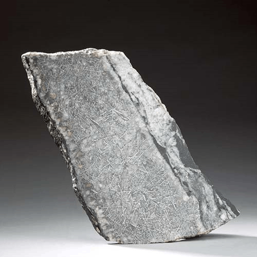
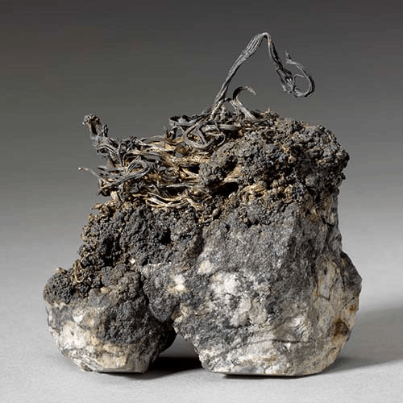
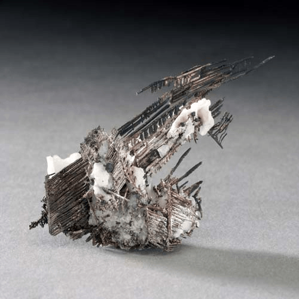

Silver - Ag
Native Elements




Habit: Characteristically silvery white, but tarnishes to gray or black. Cubic octahedral or dodecahedral crystals, but commonly reticulated, Arborescent and wiry forms. Metallic Luster; opaque.
Environment: Widely distributed in small amounts, much of the world's silver production is a by-product of refining lead, copper and zinc, but deposits of silver are also known. The larger deposits are probably the result of the deposition of silver from Hydrothermal solutions. Also formed through secondary processes of oxidation in deposits containing minerals rich in silver.
Etymology: From the Latin word argentum, this in turn is derived from a Sanskrit word meaning "white"and "shining". The chemical symbol (Ag) from the Latin argentum.